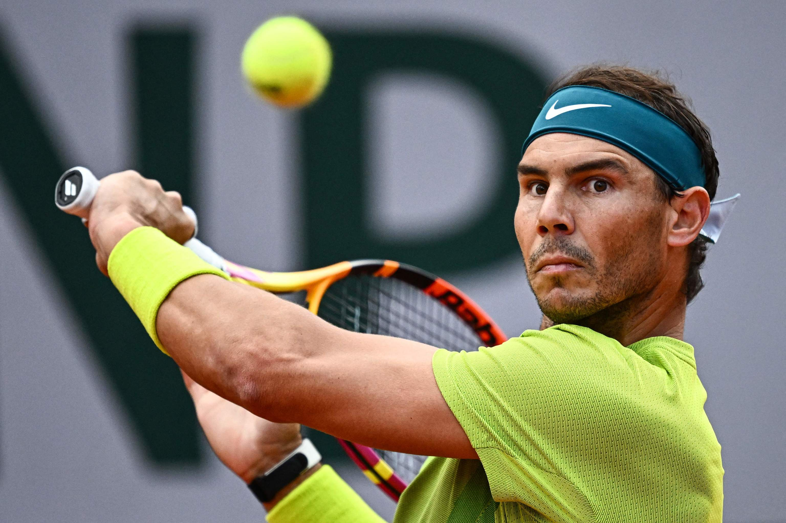

Bienvenidos
Les presentamos Rafa Nadal Info, un sitio web donde recopilamos toda la información relevante a Rafael Nadal. Aquí podrás encontrar novedades, tanto resultados como el día a día de Rafa, calendario profesional entre otros. También contamos con nuestra propia sección de biografía en la cual te contamos el camino que ha recorrido Rafa para convertirse en el campeón que hoy conocemos, tanto en su intimidad como en su trayectoria deportiva, además nuestro sitio también cuenta con una sección exclusiva dedicada a los cuatro GrandSlams, donde podrás conocer la historia de cada uno de estos eventos, sus peculiaridades, y los resultados que ha obtenido Rafa a lo largo de su carrera.